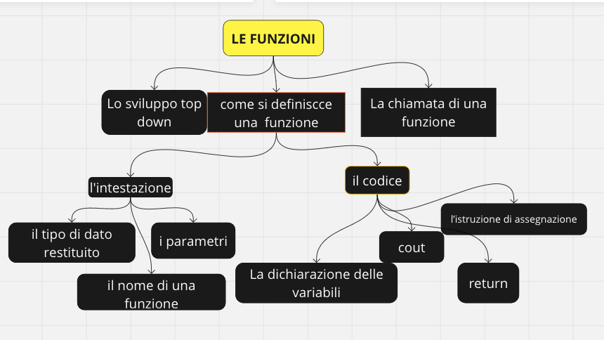

Sommario
Come si scrive la definizione di una Funzione
Vediamo l’esempio di una funzione che calcola il prodotto di due numeri:
void StampaProdotto (int a, int b) {
int P;
P = a * b;
cout << P << endl;
}

.jpg)
.jpg)
Il Tipo void
Una funzione di tipo void non restituisce alcun risultato alla funzione principale dove viene eseguita. Il risultato della funzione void non è reso disponibile per le altre funzioni del programma.

L'elenco dei Parametri
Ecco la sintassi generale per la definizione di una funzione:
tipoFunzione nomeFunzione(tipo1 nome1, tipo2 nome2, ...) {
istruzioni;
}

Domande
Adesso che hai appreso il significato di void e il modo in cui viene costruita una funzione, considera il seguente codice e rispondi alle domande successive:
void Stampa() {
cout << "stampa di prova" << endl;
cout << "fine della funzione" << endl;
}
Cosa rappresenta il codice della slide precedente?
- una funzione
- una variabile
Cosa significa “void” nell’intestazione: void Stampa ()?
Ti ricordo che cout << significa “visualizza sullo schermo”. L’istruzione cout << "stampa di prova" serve per visualizzare sullo schermo il messaggio: "stampa di prova".

La Chiamata di una Funzione
“Chiamare” una funzione significa eseguirla. Per eseguire una funzione basta utilizzare la seguente sintassi:
nomeFunzione(elenco dei valori da passare ai parametri);
In pratica viene eseguita come se fosse un semplice comando. Al momento della chiamata, il compilatore esegue il controllo di corrispondenza tra i parametri specificati nella definizione della funzione e i valori passati alla funzione.

Funzione Somma
Nel seguente codice è presente:
- la dichiarazione delle variabili
totale,subtot1esubtot2 - la chiamata della funzione
Somma - l’assegnazione del risultato della funzione
Sommaalla variabiletotale
int totale;
int subtot1;
int subtot2;
...
totale = Somma(subtot1, subtot2);
...
Che tipo di risultato (dato) viene restituito dalla funzione Somma?
- numerico
- stringa

La Funzione Main
È la funzione che viene eseguita per prima all'avvio del programma. Nella main direttamente o indirettamente vengono chiamate tutte le altre funzioni.

Cos'è una Variabile Globale
Definizione: Una variabile globale è una variabile dichiarata al di fuori di qualsiasi funzione, metodo, costruttore o blocco. È accessibile e modificabile da qualsiasi parte del programma.
Utilizzo: Le variabili globali vengono utilizzate quando è necessario mantenere uno stato o condividere dati tra diverse parti di un programma senza dover passare i dati come argomenti di funzione.

Le Variabili Globali
- Vantaggi:
- Facilita la condivisione di dati tra funzioni e moduli.
- Riduce la necessità di passare parametri tra funzioni.
- Svantaggi:
- Può portare a conflitti di nome e difficoltà nel debug.
- Rende il codice meno modulare e più difficile da mantenere.

Cos'è una Variabile Locale
Definizione: Una variabile locale è una variabile che è accessibile solo all'interno della funzione, metodo o blocco in cui è stata dichiarata.
Ambito di Applicazione: Le variabili locali sono dichiarate all'interno di funzioni, metodi o blocchi e sono visibili solo in quell'ambito.

Vantaggi e Svantaggi delle Variabili Locali
- Vantaggi:
- Migliorano la modularità del codice e riducono il rischio di conflitti di nomi poiché la loro visibilità è limitata.
- Svantaggi:
- Non possono essere utilizzate al di fuori del loro ambito di dichiarazione, il che richiede di passare i dati tramite parametri se necessario.
- Best Practice:
- È consigliato utilizzare variabili locali il più possibile per mantenere il codice organizzato e facile da mantenere.